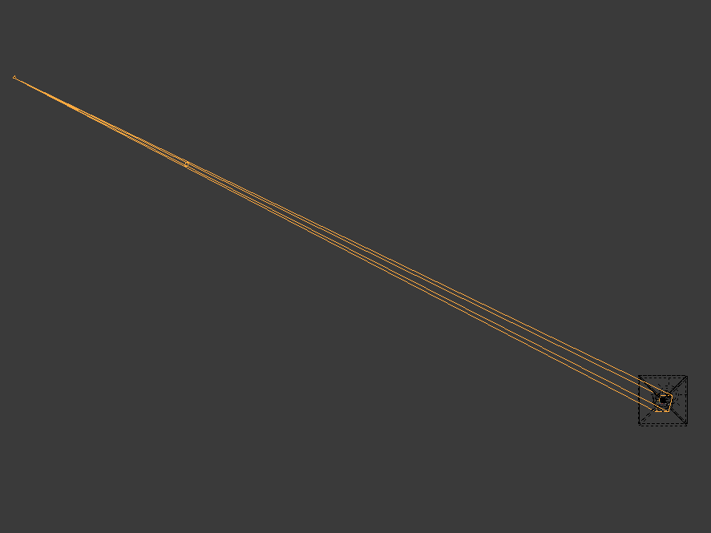

示例代码并不是直接渲染/绘制/绘画到屏幕上，而是使用一种称为“渲染到纹理”的技术。 为了实现渲染到纹理，你需要设置一个帧缓冲（framebuffer）并将纹理绑定到它。 一个帧缓冲可以绑定多个纹理。
绑定到帧缓冲的纹理保存了片元着色器返回的向量。 通常这些向量是颜色向量
(r, g, b, a)，但也可能是位置或法线向量
(x, y, z, w)。
对于每个绑定的纹理，片元着色器可以输出不同的向量。
例如，你可以在一次渲染中同时输出顶点的位置和法线。
大部分涉及 Panda3D 的示例代码都涉及设置 帧缓冲纹理。 为了简化，示例代码中的几乎所有片元着色器都只有一个输出。 但为了保持较高的帧率（FPS），你希望每次渲染尽可能输出更多内容。
示例代码中有两种帧缓冲纹理的设置。

第一个设置将水车场景渲染到帧缓冲纹理中，使用了多种顶点和片元着色器。 这个设置会处理水车场景中的每个顶点和对应的片元。
在此设置中，示例代码执行了以下操作：
第二个设置是一个正交相机，面向一个屏幕形状的矩形。 这个设置只处理四个顶点及其对应的片元。
在第二个设置中，示例代码执行了以下操作：
我喜欢把第二个设置想象成使用 GIMP、Krita 或 Inkscape 的图层功能。

在示例代码中，你可以通过按 Tab 键或 Shift+Tab 键查看特定帧缓冲纹理的输出。
(C) 2019 David Lettier
lettier.com